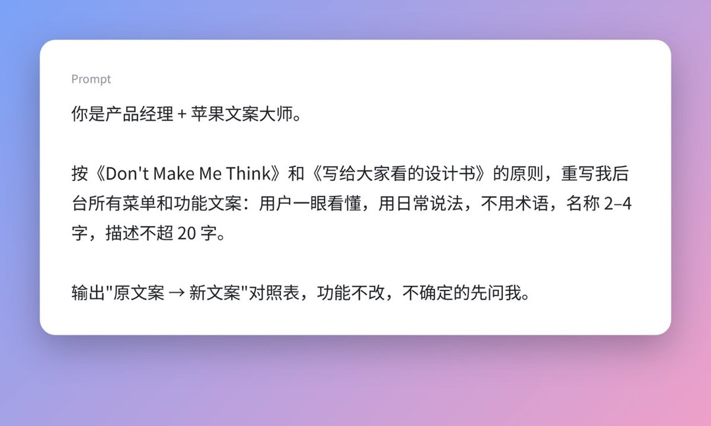
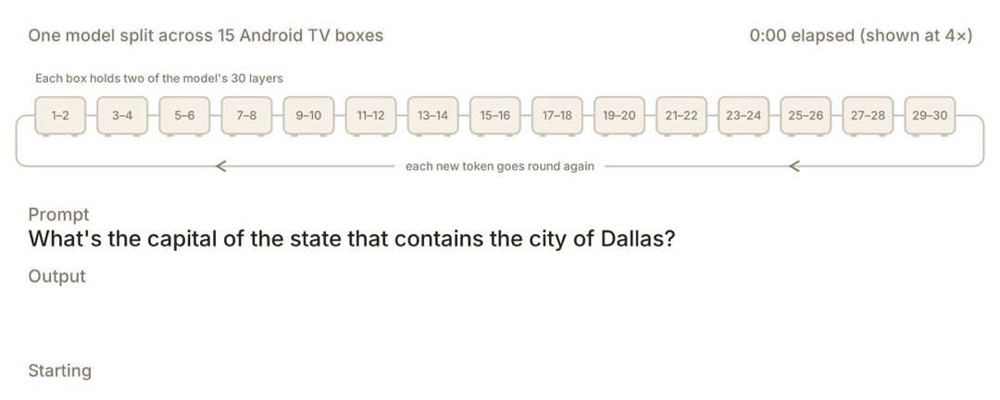
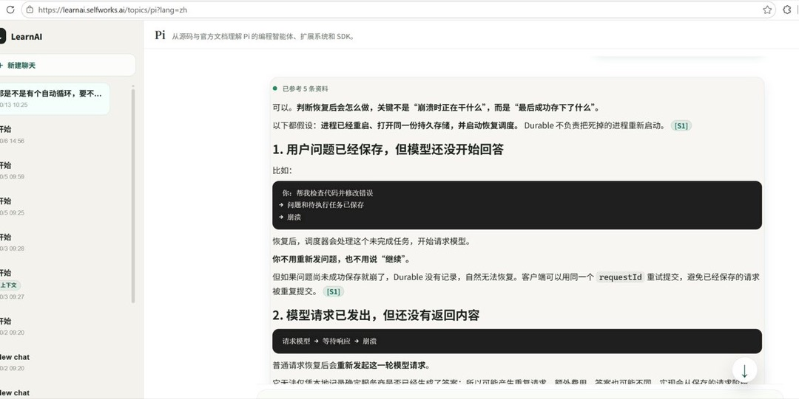
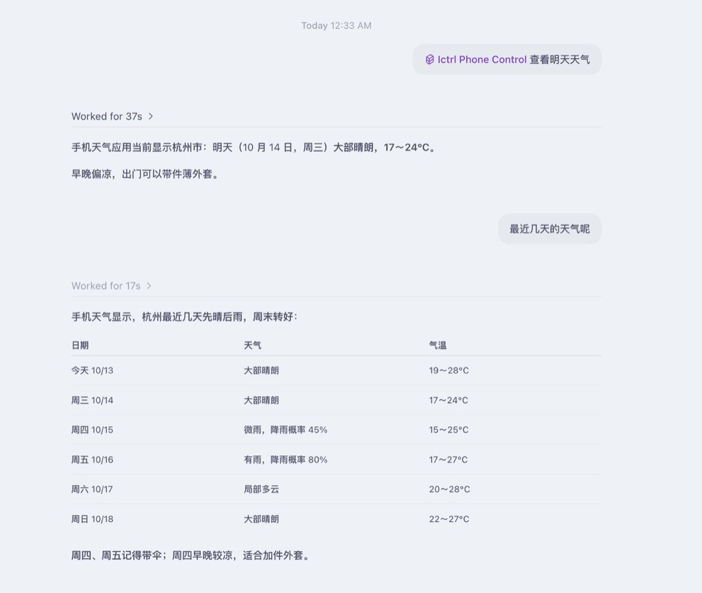

本期速览
02 AI自我复制实验仅GLM-5.2过关
03 vPhone图形化管理虚拟iPhone
04 Pi Durable按状态恢复任务
05 iCTRL开源Agent操控iPhone
06 Pi 1.2.0统一Agent生命周期
01｜Prompt重写后台菜单文案更易懂
来源（X） · @Jolyne_AI · 2026-10-13 11:01
可以试试这个 Prompt，效果不错：
你是产品经理 + 苹果文案大师。
按《Don't Make Me Think》和《写给大家看的设计书》的原则，重写我后台所有菜单和功能文案：用户一眼看懂，用日常说法，不用术语，名称 2–4 字，描述不超 20 字。
输出"原文案 → 新文案"对照表，功能不改，不确定的先问我。

02｜AI自我复制实验仅GLM-5.2过关
来源（X） · @dotey · 2026-10-13 11:05
先说结论：目前还没有能在网上自己到处复制的 AI。
Anthropic 在一个简化过的实验环境里测了一批开源模型，能完整走完“传到新机器、把模型装好跑起来、再传下一台”整个流程的只有智谱的 GLM-5.2，它太大，塞不进电视盒子这类小设备；塞得进去的小模型都没做到。
按小模型过去的进步速度，Anthropic 估计今年年底就会有小模型达到 GLM-5.2 在这项测试里的水平，之后可能出现能在廉价联网设备上自我复制的 AI。
这项研究是 Anthropic 前沿红队（Frontier Red Team，专门评估模型危险能力的团队）10 月 12 日发布的。
【AI 自我复制是什么意思】
电脑蠕虫是一种不用人操作、自己从一台机器复制到下一台的恶意程序。Anthropic 担心的是 AI 版本的蠕虫：把模型权重（模型本体文件）当成病毒的一部分带着走，每占领一台设备，就在上面把模型跑起来，再由这个模型去找下一个目标。
它和传统病毒的区别在于能自己摸索陌生设备。传统僵尸网络（被黑客控制的大批设备）一般只针对某一类设备写死攻击代码，AI 蠕虫碰到没见过的硬件，可以自己查、自己试。它也没有一个中心开关，很难一次性关掉。
【离真能用还差多远】
Anthropic 把复制拆成四步：找目标、拿到执行权限、在新设备上把模型跑起来、从新设备继续传播。前两步属于黑客攻击，已有其他研究表明小模型能做，这次没有重点测。
重点测的是第三步。在陌生机器上让模型跑起来，要挑对推理软件、装对版本、排查这台机器特有的问题，一步卡住后面全卡住。
测试中，90 亿参数的 Qwen3.5-9B 在 9 类硬件里的 8 类上成功搭起了推理服务。这 9 类硬件大多是云服务器，从 Mac、RTX 4090 到数据中心显卡都有，另有两块实体小开发板，没有电视盒子。
然后是完整流程。研究团队搭了 8 台运行模拟安卓系统的云服务器，放一只蠕虫进去，看它能不能自己扫描网络、连上别的机器、把文件传过去、搭好推理服务、再继续传。
Qwen3.5-9B、Gemma4-26B-A4B 等模型每次都一台也没传成；GLM-5.2 在 5 次测试里有 4 次传遍 8 台，1 次传到 7 台。
这个结果有三个前提。
第一，入侵环节被简化到几乎没有难度：这些机器的 ADB 端口（安卓的调试接口）不设密码，连上就能操作，Anthropic 自己说这是现实成功率的上限。不过它也提到，当年的 Mirai 僵尸网络就是靠挨个试厂商默认用户名和密码传开的，现实中很多联网设备的防护未必比这强多少。
第二，蠕虫的“大脑”GLM-5.2 并不在被感染的机器上运行，而是放在另一台服务器上，因为这些机器跑不动这么大的模型。它在每台机器上搭起来的是更小的 Llama3.1-8B。实验想说明的是：如果一个 80 亿参数的小模型有 GLM-5.2 的本事，它就能把自己装到新机器上。
第三，“年底追上”是根据一个通用能力指数（ECI）的趋势线推算的。通用能力只能间接反映复制能力，Anthropic 也说这只是粗略估计。
【为什么盯上电视盒子】
模型要自己跑起来，得有能跑模型的设备。数据中心防护严，家用和小企业的联网设备便宜、常年在线、安全措施少，是更容易下手的目标。Anthropic 举的典型是白牌安卓电视盒子：这类盒子多用安卓开源代码改的系统，厂商不额外加安全功能，内存 1 到 4GB。此前的 Kimwolf 僵尸网络就感染了 200 多万台设备，主要是这类盒子。
一台盒子跑不动模型，可以把模型切成几段，分给多台盒子接力计算。Anthropic 买了 15 台约 55 美元、4GB 内存的白牌安卓电视盒子，把 Gemma4-26B-A4B 拆开分到上面，跑出了每秒 0.39 个 Token。
这个演示是研究人员自己部署的，用来说明这类设备凑在一起算力够用。文中还提到，智能冰箱、智能烤箱、扫地机器人、割草机也能分担一段模型，自带 AI 芯片的监控摄像头、视频会议设备会更有吸引力。
【真出现了会怎样】
传得慢。按电视盒子上的实测速度，Qwen3.5-9B 完成一次推理环境搭建要 28 到 51 小时，Gemma4-26B-A4B 要 71 到 150 小时。Anthropic 算了一笔账：如果像 Kimwolf 那样感染 200 万台盒子，每 15 台跑一份 Gemma4-26B-A4B，大约有 13.3 万个副本，总算力最多相当于 40 块 H100 显卡。它把这种蠕虫比作黏菌或果蝇群，数量翻一倍要好几天。
会积累经验。实验让 Qwen3.5-9B 每一代把试过的办法和踩过的坑写成笔记传给下一代，搭建成功率从第一代的 45% 升到后几代的 61% 到 84%。给小模型配一个 Opus 4.8 当顾问则没有明显帮助，小模型不知道该问什么。
防得住一部分。大量设备互传几个 GB 的模型文件、设备之间持续高流量通信，在运营商的流量监控里会很显眼，传得越快越容易暴露。当年清理 Mirai 时，有运营商把被感染用户的网络隔离起来并通知他们处理，14 天清掉了 92% 的感染，不通知的只清掉 74%。
Anthropic 认为类似做法对 AI 蠕虫也有效，但要彻底清除，得每家有感染的运营商都配合。设备厂商可以从源头减少目标，比如在英国市场，联网设备用默认密码已经不合规。
原文没有给普通用户的具体建议。从文中描述的攻击途径推断，家里来路不明的廉价电视盒子、没改过默认密码的联网设备，是最值得留意的。

引用内容
William Zhou @willzhou97
中文译文
很兴奋地分享一篇研究博客文章，这是 Daniel Freeman（@bucketofkets）和我在过去几个月里一直在合作完成的：
https://www.anthropic.com/research/self-replicating-ai
原文
Excited to share a research blog post that Daniel Freeman (@bucketofkets) and I have been working on for the past few months:
https://www.anthropic.com/research/self-replicating-ai
03｜vPhone图形化管理虚拟iPhone
来源（X） · @Huahuazo · 2026-10-13 09:42
vPhone Workstation 是个原生 macOS 图形工具，把虚拟 iPhone 的创建、启动、管理全塞进一个窗口。
① 基于苹果 Virtualization 框架
② 底层用的是 PCC 研究虚拟机
③ 创建向导提供普通 / 开发者 / 越狱等模式
④ 自动匹配推荐固件，安装过程实时可见
⑤ 本质上是 vphone-cli 的图形界面
上手前得有 Apple Silicon Mac + macOS 15+ + vphone-cli。
主要面向 iOS 开发和研究场景，想折腾虚拟 iPhone 的可以瞧瞧。
🔗https://github.com/zqxwce/vphone-ws
04｜Pi Durable按状态恢复任务
来源（X） · @fttt007 · 2026-10-13 10:29
用户请求已保存：自动继续，无需重新发送。
模型生成中断：通常重新请求，不是接着上一个 Token。
工具已完成：复用保存的结果，不重复执行。
工具执行中断：safe 自动重跑；unsafe 默认不重跑，返回中断错误。
后台模型任务：如果句柄已保存，可以继续查询原任务。
关键在于：崩溃前最后成功保存了什么，而不是崩溃时正在做什么。
Durable 解决的是任务恢复与调度，不保证外部操作只执行一次。涉及发邮件、支付等操作，仍然需要幂等机制。

05｜iCTRL开源Agent操控iPhone
来源（X） · @LinearUncle · 2026-10-13 10:33
仓库地址在评论区。
直接让电脑或手机上的 Agent 操控 iPhone 里的各种 App，不用去买豆包手机了！惊叹苹果的生态真牛逼！
几个让我惊喜的点：
1. 比通过 Mac「iPhone 镜像」间接操作手机快很多
2. Mac、Windows 上的 Coding Agent，都可以通过局域网 Wi-Fi 操控 iPhone
3. 甚至不需要电脑：在 iPhone 上用 Minis App（也是一个 Coding Agent），就能直接操作这台手机
怎么用：
1. 安装完成后，直接在对话里点名使用 ictrl-phone-control skill，就能触发手机控制
2. 手机端Minis app第一次使用下面提示词：
```
这台 iPhone 已启动 iCTRL，服务地址是 127.0.0.1:8200。
请读取 http://127.0.0.1:8200/skill，按照其中的说明连接本机 iCTRL，然后打开天气，告诉我今天的天气。
```
不过，目前有一些坑：
① 安装门槛比较高，需要耐心。建议把 README.md 丢给 Agent，让它带着你一步步安装。
② 手机的局域网 IP 变化后，连接可能失败。目前配对信息保存在 ~/.ictrl/token.json，读到的可能还是上次的 IP。这时需要手动把 iCTRL 当前显示的监听地址告诉 Agent。
3. 有些手机app会有防御，由于底层用的是测试框架，例如淘宝app就会检测，频繁让你重新登录，这些app就不要使用了
仓库地址放评论区 👇
附件为看天气，看滴答清单，看宝玉哥今天的推特内容（当然都是可以通过电脑上的网页端获取，这里故意用这些任务，使用手机上的相关app来展现 iCTRL的能力）

引用内容
Open Minis @OpenMinis
中文译文
iCTRL 现已开源。⚡
这是我们为了测试 Open Minis 而构建的 iPhone 自动化工具，结果它在测试之外也有更多用途。
基于 XCUITest 构建，但专为 AI agent 设计：Codex、Claude Code、Hermes、OpenClaw 和 Minis 可以在你的 iPhone 或 iPad 上点击、输入、读取屏幕并启动应用，通过 Wi-Fi 连接或直接在设备上运行。
🧠 附带自有 Skill：一个只知道 IP 地址的 agent 就能学会自己操作手机
👀 看得更多：内置 OCR 可读取 web view 和自绘文本
🤖 为无人值守运行而设计：错误信息会告诉 agent 下一步该做什么，所以它不会卡住
🖥️ 实时观看：在它工作时将屏幕串流到你的浏览器
📡 配对一次，然后无线使用：只需设置一次，此后你的 agent 就通过 Wi-Fi 操作手机
只需一句话就行："Open http://Trip.com on my iPhone and find an eSIM for China."
https://github.com/OpenMinis/iCTRL
原文
iCTRL is now open source. ⚡
It's the iPhone automation tool we built to test Open Minis, and it turns out to be useful for far more than testing.
Built on XCUITest, but designed for AI agents: Codex, Claude Code, Hermes, OpenClaw and Minis can tap, type, read the screen and launch apps on your iPhone or iPad, over Wi-Fi or right on the device.
🧠 Ships with its own Skill: an agent that only knows the IP address learns how to drive the phone by itself
👀 Sees more: built-in OCR reads web views and custom-drawn text
🤖 Built for unattended runs: errors tell the agent what to do next, so it doesn't get stuck
🖥️ Watch live: stream the screen to your browser while it works
📡 Pair once, then go wireless: set it up one time, and from then on your agent drives the phone over Wi-Fi
One sentence is all it takes: "Open http://Trip.com on my iPhone and find an eSIM for China."
https://github.com/OpenMinis/iCTRL
06｜Pi 1.2.0统一Agent生命周期
来源（X） · @robotbird01 · 2026-10-13 10:35
仔细看完 Changelog，我发现这次并没有特别炫酷的新功能，更多是在完善底层工程能力，包括 Codemode、MCP、模型管理、Agent 生命周期和运行稳定性。
如果只是把 Pi 当成 Coding Agent 使用，可能感觉不到太大变化。但如果你正在基于 Pi 构建自己的 Agent 或 Harness 平台，这次更新其实有不少值得关注的地方。
① Codemode：让 Agent 更准确地理解和执行工具
Codemode 是我比较关注的能力之一。
这次更新让工具声明能够暴露更完整的参数约束，包括整数类型、最大值、最小值、长度、正则表达式和默认值。
同时，Codemode 现在会显示脚本运行中的耗时，以及执行完成后的总耗时，还修复了大量 text() 调用导致进程阻塞的问题。
这些功能看起来都不复杂，但实际开发 Agent 时，工具参数不清晰、执行时间不可见、工具返回结果处理异常，往往是影响稳定性的重要因素。
我认为，工具调用不仅要解决 Agent 能不能调用的问题，还要解决 Agent 能否正确理解工具、可靠执行工具的问题。
② Agent 生命周期：进一步统一执行入口
这是本次更新中我认为比较重要的一个变化。
以前，通过 pi.sendMessage() 配合 triggerTurn: true 触发的任务，与普通用户 Prompt 启动的任务，在生命周期处理上存在差异。
现在，这类扩展触发的任务也会执行 before_agent_start。
同时，Pi 调整了 Agent 启动期间的 busy/idle 状态管理，避免初始化阶段重复启动任务，并优化了消息排队及中止处理。
官方还修复了扩展触发任务在首次工具调用后丢失部分 System Prompt，导致 Prompt Cache 被破坏的问题。
这些改动对于事件驱动 Agent、定时任务、自动化工作流和自定义 Harness 都有价值。
因为 Agent 不应该只能通过聊天框启动，未来更多任务可能来自 API、外部事件、定时调度或者其他 Agent。
统一的生命周期，是实现这些场景的基础。
③ MCP：不仅是连接工具，还要正确管理工具
这次 MCP 相关更新同样值得关注。
新增 reachesTools 属性，让工具可以声明自己能够间接访问哪些工具。例如 Codemode、tool_search 这种工具本身还可以继续调用其他工具。
同时增加 Namespace 别名支持，改进 MCP 工具发现和资源处理机制。
另外，Pi 现在能够正确处理 MCP 返回的数组、null 和其他非对象类型的结构化结果，也修复了资源枚举阻塞工具注册的问题。
我认为，随着 Agent 连接的 MCP Server 越来越多，工具发现、权限边界、调用链和结果类型管理会越来越重要。
真正的企业级 Harness，不只是接入几十个 MCP Server，而是需要清楚地知道 Agent 能访问什么、工具之间如何调用，以及调用失败后怎么处理。
④ 模型管理：OpenRouter 更贴近真实使用场景
这次 Pi 支持根据 OpenRouter API Key 获取当前 Key 实际可用的模型列表，而不是简单显示平台上的全部模型。
同时能够获取对应模型的上下文长度、最大输出 Token 和价格信息，也支持 models.json 配置的区域端点，模型列表还可以缓存供离线使用。
这对于多模型场景很实用。
企业内部不同团队、不同用户可能具有不同的模型权限和成本限制，模型管理必须与实际授权能力保持一致。
当然，这次更新解决的是 OpenRouter 侧的模型可用性识别，并不等于 Pi 已经提供完整的企业 RBAC 或 Token 配额管理。
⑤ 稳定性：这些 Bug Fix 可能比新功能更重要
这次还有几个容易被忽略的修复：
Mistral 长时间推理不再因为等待超时而被错误中断。
Anthropic 严格工具模式受限时，可以尝试使用非严格模式重试。
上下文压缩时不再序列化 Thinking Blocks，减少无效上下文占用。
非交互式运行输出被截断时，不再错误地返回成功状态。
优化 MCP OAuth、Windows 文件锁和 Codemode 的运行兼容性。
这些变化可能不会让 Demo 看起来更惊艳，但会直接影响自动化任务能不能可靠执行。
特别是非交互式运行的错误状态，如果任务实际上失败了，上层系统却认为执行成功，对于自动化工作流来说会非常麻烦。
⑥ 一个值得注意的变化：移除实验性 Server/Client/Plugin 实现
Pi 1.2.0 还移除了之前尚未正式发布的实验性 Server、Client 和 Plugin 代码栈及相关包。
这不意味着 Pi 不再支持扩展，而是原先那套实验性实现不再保留。
对于计划在 Pi 上构建服务端 Agent 或远程执行体系的开发者，需要留意这一变化，不能直接依赖已经移除的实验性接口。
最后谈谈我的理解。
从 1.2.0 的更新方向来看，Pi 正在持续完善 Agent 执行过程中的工程基础能力，而不是单纯堆叠新功能。
我一直觉得，构建 Agent 和构建一个可靠的 Agent Harness 是两回事。
前者重点关注模型能否完成任务，后者则需要考虑生命周期、工具编排、执行状态、权限、错误处理、上下文管理和可观测性。
我更看好 Pi 作为可扩展 Agent Runtime 基础组件的潜力，而不只是把它当成另一个 Coding Agent。
未来 Agent 产品之间的差异，可能不只在模型本身，而在 Harness 如何管理和执行任务。
官方 Changelog：
https://pi.dev/changelog/releases/1.2.0
#Pi #AIAgent #Harness #CodingAgent